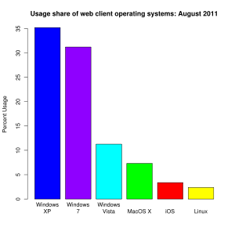

CPU: Intel Core 2 Quad Q6600 @ 3.5ghz
CPU Cooler: Coolermaster V10
Motherboard: Asus P5E
GPU: Two HIS Radeon Turbo IceQ 4 1gb 4850s in CrossfireX OC’d to 690,1190
RAM: OCZ FATAL1TY Edition 8gb (Two 2gb x 2) DDR2 1066
Power Supply: HIPER Type R II 890w
Keyboard: Saitek Eclipse Blue LED Version
Mouse: Logitech MX518 Gaming Mouse
Sound Card: Supreme FX II
Screen: 22in 1680x1050 Dell SP2008WFP
Hard Drive: One Western Digital 500gb 7200rpm SATA II
Speakers: Cyber Acoustics Gaming Series 2.1 Speaker Set
I don’t see why people hate on Apple. Their systems are overpriced, but their operating system is so much better then Microsoft. And the systems are over priced, but have you seen some of those nifty features that they have? Key’s that get backlit when it’s dark built into the laptops?
Updated my Vista 64 with the Windows 7 build. Looks nice and games nice.
Love the updated Taskbar and Libraries features - Glad they didn’t go the bloated OSX way.
Never had an issue with Vista though Windows 7 seems slightly quicker in general - Especially after using it for a few days - must prioritise commonly run tasks a bit better than Vista did.
Damn Windows 7 and its incompatibilities, I can only run steam games. I cant run Homeworld 2, C&C Generals (Dont have DX 8.1 lol?), CoD4 (PB doesnt know what Win7 is), or NFS: Carbon. Now I am sure all I have to do is update PB and i can play CoD4 again but I cant play the other games even with the compatibility mode set.
If there are any ways around this that would be much appreciated. Thank you in advanced.
I am running the RC 7100 build. DX11 also causes graphical problems with Doom 3 and any other game runs with black bars on the sides. I am currently thinking of downgrading back to vista. I just don’t want to lose my files.
Direct X 11 doesn’t exist yet Since no graphics cards have it yet, the highest currently is 10.1, plus your direct x level is only as high as your cards direct x level. It just says that because When it comes out its going to run on the Direct X 11 API.
Looks like you and I have the same views. The Macintosh OS is far better than Windows, but I use Windows mainly just because I’m a gamer, and Macs aren’t made for hardcore gaming, simply because their OS isn’t open architecture. I respect Apple’s OS for what it is and does, and I respect Microsoft’s OS for what it is and does. They each have their strongpoints. And I also dual boot Fedora 10, it’s niceeeeeeee.
Anyways, back on subject, I haven’t used Windows 7 and from what I’ve see, it’s just Vista but with a different taskbar to behave more like the Mac’s dock, except not quite as sexy. I really doubt that it will take off, in fact I think it will do just as poorly as Vista, unless they really advertise it like crazy.
The problem with Microsoft’s advertising is that they mimicked Apple’s “I’m a Mac / Pc” line. Now, the “I’m a Mac” works for Apple, because ‘Mac’ describes only one thing, and that is their product, and nothing else. But when Microsoft used the “I’m a Pc” line in their advertising, they didn’t consider that the term ‘Pc’ covers far more than just their products, which, I believe, is why they should have just advertised a specific Operating System instead of a general term. This isn’t to say they didn’t advertise Vista any, they did, I just think they should have made it more clear in all of their commercials / advertisements.
This isn’t to say I’m a Vista or Microsoft fan, I’m most certainly not, in fact I tend to use the Apple equivalent as much as I can, and only use Windows when I’m forced to. Each company has their own thing going for them, and both should be respected as such.
As someone who works on Macs every day I have to strongly disagree with you. Apple has forsaken their once strong high end support and preference for the Mass market - reflected through use of broken updates and a needless bloated interface. The internal war against Adobe is annoying though explains the performance gains on the PC version. OSX is good for emails and OK for browsing if you use Firefox. The many Adobe and Quark bugs are just ridiculous - probably due to the frequent OSX revisions and the reason I have switch to the PC for such tasks.
Windows 7 has a massive following and saying it will fail is bizarre. Vista sold more copies than OSX has in existence in under two weeks.
The Macs dock isn’t sexy and the Win7 one is nothing like it. Merely a progression from the XP one. I have all the fancy effects turned off in OSX so it is pretty much just a shortcut bar - bouncing icons can drive you nuts.
As I type this I have sent the 345th crash report to Quark.
If you are gaming on Win7 make sure you get the latest nvidia Windows 7 drivers.
Considering the massive positive hype Win7 has and the fact more people are using the RC than there are using OSX…
If you haven’t used Windows 7, how can you comment?
That´s i wanna say.
Cuz it´s NOT only a Vista with better taskbar
Yes it´s based on Vista, but Win7 is going to be that what XP was for us 8 Years now.
The Base-Code is cleaned up, it runs much smoother than Vista AND XP
Most features that sucks in Vista are recreated and now really Good.
Example:UAC sucked in Vista, now it´s much better and i am going to use it in Final.
Plus the new Features it´s great.
And the most important thing is. It´s the stable´st Windows i ever saw.
So Dillxn, test somewhat before you say shit about it.
Never owned a mac in my life. It’s just somebody who finally isn’t biased on the opinion for no reason whatsoever other then “This is what I use, and therefore it’s better.”
Just curious where you’re getting these numbers from, have a link?
edit
 Graph from here[/size]
Assuming that this graph is more or less correct, lets calculate the numbers.
Round windows up to using 95% percent of the market share, and OS X up to 5%. So, that means, if every 1 in 19 or more people has downloaded and installed Windows 7, then they have more then the entire mac population.
1 in every 19? I highly doubt this. I’m guessing that either you or microsoft are pulling numbers out of their ass.
Look, I really appreciate this response. It’s a very well supported statement, and I’m actually starting to think I’ll like Windows 7 more than previously conceived. I also appreciate your politeness.
Also, I’m a gamer, and I am constantly updating my 280’s drivers
Nvidia is great about that, aren’t they?
I wasn’t trying to badmouth Windows 7, you’re absolutely right, I can’t if I haven’t used it. I was just stating my preconceived views of it based on what I’d seen.
I will actually download it and test it out on vmware, just because now I’m so interested. Especially since you say it’s made improvements over Vista. My one question is, does it consume the same or less resources than XP? Because if not, then I’m sticking with XP for as long as possible.
Please, though, let’s try to have a civil discussion rather than a flamewar.
Has anyone using a laptop had bad performance drops? I read on a Windows7 forum that some guys had dreadful performance hits when moving to the RC from other versions of W7. I’m still on 7000, so I’m wondering if its worth upgrading for now.
The Improved ram usage sounds nice in the newer versions, and over Vista, W7 already game me a 35-40% boost in frame rates in some cases.
.
Founded in 2004, Leakfree.org became one of the first online communities dedicated to Valve’s Source engine development. It is more famously known for the formation of Black Mesa: Source under the 'Leakfree Modification Team' handle in September 2004.